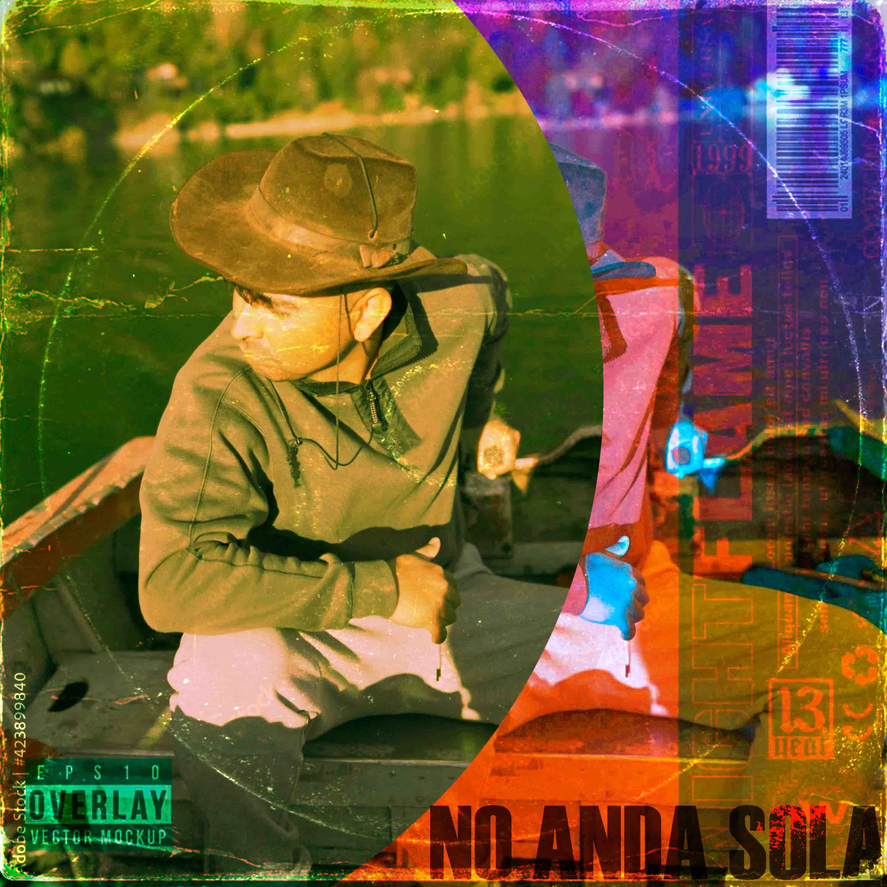

Inicio
Instragram
Youtube
Quién es Fonta
Tamaño de tarjetas:
Pequeño
Mediano
Grande
Catálogo de Fonta

No Anda Sola
Duración: 2:54
Tu navegador no soporta el audio.
Booty Sport
Duración: 3:10
Tu navegador no soporta el audio.
Esa Chapa
Duración: 2:54
Tu navegador no soporta el audio.